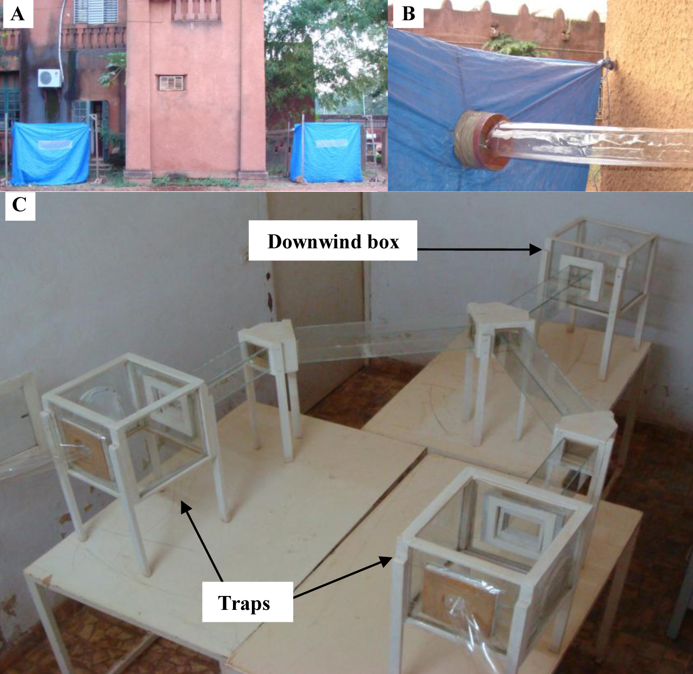

Permutations and pairs#
Sometimes the difference we are interested in is a difference between pairs of values.
In the idea of permutation page, we introduced data from an experiment on effect of drinking beer on mosquitoes. These data are a good example of a situation where we want to look at differences between pairs of values.
You may remember that the experiment involved two groups of participants. A group of 24 participants drank beer for the experiment, and another group of 18 subjects drank water. The experimenters took a measure of how attractive each person was to mosquitoes. Specifically they put each person in a tent, from which there was an air tube leading to a closed box of 50 mosquitoes. The experimenters then opened the box and counted how many mosquitoes flew down the tube towards the tent containing the person. This count is the “activated” column in the dataset. As you will see in a second, the explanation above is a simplification of the actual experiment.
Without further ado, let us load the data.
If you want to run this notebook on your own computer, Download the data from
mosquito_beer.csv.
See this page for more details on the dataset, and the data license page.
# Import Numpy library, rename as "np"
import numpy as np
# Make random number generator.
rng = np.random.default_rng()
# Import Pandas library, rename as "pd"
import pandas as pd
# Safe setting for Pandas.
pd.set_option('mode.copy_on_write', True)
# Set up plotting
import matplotlib.pyplot as plt
plt.style.use('fivethirtyeight')
mosquitoes = pd.read_csv('mosquito_beer.csv')
mosquitoes.head()
| volunteer | group | test | nb_released | no_odour | volunt_odour | activated | co2no | co2od | temp | trapside | datetime | |
|---|---|---|---|---|---|---|---|---|---|---|---|---|
| 0 | subj1 | beer | before | 50 | 7 | 9 | 16 | 305.0 | 321.0 | 36.1 | A | 2007-08-28 19:00:00 |
| 1 | subj2 | beer | before | 50 | 26 | 7 | 33 | 338.0 | 720.0 | 35.3 | B | 2007-08-28 21:00:00 |
| 2 | subj3 | beer | before | 50 | 5 | 10 | 15 | 348.0 | 355.0 | 36.1 | B | 2007-09-15 19:00:00 |
| 3 | subj4 | beer | before | 50 | 3 | 7 | 10 | 349.0 | 437.0 | 35.6 | A | 2007-09-25 17:00:00 |
| 4 | subj5 | beer | before | 50 | 2 | 8 | 10 | 396.0 | 475.0 | 37.0 | B | 2007-09-25 18:00:00 |
The first simplification that we made in our description above, was that each subject went into the tent twice, once before they drank their allocated drink (beer or water), and once after taking their allocated drink. On each occasion the experimenters measured the numbers of mosquitoes that headed out towards the tent. For this page, we will ignore those “before” control measures, and select only the rows corresponding to measurements “after” the allocated drink.
# Measurements after the allocated drink.
afters = mosquitoes[mosquitoes['test'] == 'after']
We will also restrict ourselves to looking at the measures from the people drinking beer:
# Measurements after the allocated drink.
beer_afters = mosquitoes[mosquitoes['group'] == 'beer']
beer_afters.head()
| volunteer | group | test | nb_released | no_odour | volunt_odour | activated | co2no | co2od | temp | trapside | datetime | |
|---|---|---|---|---|---|---|---|---|---|---|---|---|
| 0 | subj1 | beer | before | 50 | 7 | 9 | 16 | 305.0 | 321.0 | 36.1 | A | 2007-08-28 19:00:00 |
| 1 | subj2 | beer | before | 50 | 26 | 7 | 33 | 338.0 | 720.0 | 35.3 | B | 2007-08-28 21:00:00 |
| 2 | subj3 | beer | before | 50 | 5 | 10 | 15 | 348.0 | 355.0 | 36.1 | B | 2007-09-15 19:00:00 |
| 3 | subj4 | beer | before | 50 | 3 | 7 | 10 | 349.0 | 437.0 | 35.6 | A | 2007-09-25 17:00:00 |
| 4 | subj5 | beer | before | 50 | 2 | 8 | 10 | 396.0 | 475.0 | 37.0 | B | 2007-09-25 18:00:00 |
Now we come to the second simplification. In fact the experimenters did another control measurement, which was to give the mosquitoes the choice of flying towards the tent containing the person, or to an empty tent. Here is their experimental set up, from figure 1 of their paper. Note this picture, like the article from which it comes, has an “attribution” license — you can use a copy of the picture as long as you cite its original source in the paper.

Panel A shows the two tents; one contained the person, the other was empty. Tubes (panel B) connect each tent to the experimental apparatus inside the building (panel C). Each tube provides air to a box (“trap” in panel C). The 50 mosquitoes are in the “downwind” box. When the experimenters open the door to the box, the mosquitoes can stay where they are, or they can fly down either of the arms towards the trap with the person’s air, or the trap with the air from the empty tent.
Notice the no_odour and volunt_odour columns. The no_odour numbers are
the number of mosquitoes that flew into the trap leading to the empty tent (the
control arm). volunt_odour is the count of mosquitoes flying to the trap
leading to the tent containing the person.
If mosquitoes are attracted to the smell of the beer-drinking person, they will
be more likely to fly towards the person than the empty tent, and the
volunt_odour numbers will be higher than the no_odour numbers. We
therefore predict that there will, on average, be a positive difference when
we subtract the no_odour (control) numbers from the volunt_odour
(beer-drinking person) numbers.
Now we restrict ourselves to the columns of interest:
mosq_counts = beer_afters[['no_odour', 'volunt_odour']]
mosq_counts.head()
| no_odour | volunt_odour | |
|---|---|---|
| 0 | 7 | 9 |
| 1 | 26 | 7 |
| 2 | 5 | 10 |
| 3 | 3 | 7 |
| 4 | 2 | 8 |
And do our planned subtraction of the control no_odour numbers from the experimental volunt_odour numbers:
mosq_counts['person_minus_empty'] = (mosq_counts['volunt_odour'] -
mosq_counts['no_odour'])
mosq_counts.head()
| no_odour | volunt_odour | person_minus_empty | |
|---|---|---|---|
| 0 | 7 | 9 | 2 |
| 1 | 26 | 7 | -19 |
| 2 | 5 | 10 | 5 |
| 3 | 3 | 7 | 4 |
| 4 | 2 | 8 | 6 |
If our hypothesis is correct, we expect this difference (person counts minus control counts) to be positive, on average. Let’s see what this average difference was for our sample:
actual_mean_diff = mosq_counts['person_minus_empty'].mean()
actual_mean_diff
2.88
Using permutation for pairs#
We find that the difference is positive for our sample. Our question of course is whether this positive mean difference is compatible with sampling variation — the differences we will expect to see given we have taken a sample of beer-drinking people.
We now have to think about what our null world would be for such a mean difference.
In the null world, there is 0 (not-any) average difference between the control no_odour scores and the corresponding person volunt_odour scores. That is, the average difference between these two scores will be 0.
How can we simulate such a world, where we expect the average difference between this pair of scores to be 0?
If the null world it true, and the average difference is 0, then we can just do a random swap of the person and control scores in the pair, and we’ll still have an observation that is valid in the null world.
That is, to make a new dataset that could occur in the null world, we could go
through row by row and, at random, swap the volunt_odour and no_odour
scores. Then we would recalculate the mean difference, and this mean difference would be a mean difference we might see in the null world, where there is no difference on average between the two values in the pair. Then we would do this thousands of times to build up the sampling distribution of the mean difference, and then we would compare our observed mean difference the sampling distribution, to see if it was rare in the null world.
We could do this operation, of going through each row, and randomly flipping the volunt_odour and no_odour values, but we can also simplify our task with a tiny bit of algebra.
Let’s say we have the subtraction between any two values \(x\) and \(y\): \(d = x - y\), but we want the subtraction the other way round: \(y - x\). But:
So we can get \(y - x\) by multiplying \(x - y\) by -1.
We were thinking to randomly swap the two elements of the pair, and then subtract the results, but we can get the same result by taking the differences between the original pairs, and randomly choosing whether to multiply each difference by -1.
Here we choose 1 or -1 at random for each row in our data frame.
n = len(mosq_counts)
# Choose 1 or -1 at random, n times.
rand_signs = rng.choice([-1, 1], size=n)
rand_signs
array([ 1, 1, -1, 1, -1, 1, 1, 1, 1, 1, -1, -1, -1, -1, 1, -1, 1,
-1, -1, -1, 1, -1, 1, -1, 1, -1, 1, 1, 1, 1, 1, 1, 1, -1,
-1, -1, 1, 1, 1, -1, -1, 1, 1, 1, 1, 1, 1, 1, 1, 1])
The values of -1 represent rows for which we are flipping the pairs, and values of 1 correspond to pairs we have left in the original order.
Here were the original differences:
actual_diffs = np.array(mosq_counts['person_minus_empty'])
actual_diffs
array([ 2, -19, 5, 4, 6, 0, -11, 1, -3, -6, 3, -5, 8,
3, -2, -6, 2, -1, 12, 6, 0, 4, -8, 0, 1, 10,
-15, 23, 11, 10, 21, 0, -1, -7, 5, 10, 0, 9, 3,
-9, -1, 15, 3, 22, 23, 10, 12, 0, -9, 3])
This is the mean of the actual differences that we saw above.
actual_mean_diff = np.mean(actual_diffs)
actual_mean_diff
2.88
Make a new set of difference corresponding to this the flips encoded in the signs array:
# Generate result of flipping pairs randomly
fake_diffs = rand_signs * actual_diffs
fake_diffs
array([ 2, -19, -5, 4, -6, 0, -11, 1, -3, -6, -3, 5, -8,
-3, -2, 6, 2, 1, -12, -6, 0, -4, -8, 0, 1, -10,
-15, 23, 11, 10, 21, 0, -1, 7, -5, -10, 0, 9, 3,
9, 1, 15, 3, 22, 23, 10, 12, 0, -9, 3])
Now we have a mean difference in the null world:
fake_mean_diff = np.mean(fake_diffs)
fake_mean_diff
1.16
Here then is the procedure for one trial in the null world:
# One trial in the null world.
rand_signs = rng.choice([-1, 1], size=n)
fake_diffs = rand_signs * actual_diffs
fake_mean_diff = np.mean(fake_diffs)
fake_mean_diff
-0.92
Run this procedure a few times to get a feel for how much these numbers vary from trial to trial.
We repeat this procedure thousands of times to build up the sampling distribution in the null world.
results = np.zeros(10000)
for i in np.arange(10000):
# Do the single trial procedure.
rand_signs = rng.choice([-1, 1], size=n)
fake_diffs = rand_signs * actual_diffs
fake_mean_diff = np.mean(fake_diffs)
# Store the result
results[i] = fake_mean_diff
# Show the first 10 values
results[:10]
array([ 1. , 0.52, 1. , -0.64, 2. , 0.76, -0.24, 1.08, -0.56,
-0.8 ])
plt.hist(results, bins=50)
plt.title('Sampling distribution of mean of differences')
plt.axvline(actual_mean_diff, color='red', label='Actual value')
plt.legend()
<matplotlib.legend.Legend at 0x7f77c6b07810>
Finally we ask how unusual the actual value is in the sampling distribution from the null world:
p = np.count_nonzero(results >= actual_mean_diff) / 10000
p
0.0165
We have found that there is a roughly 1.5% chance we would see the actual value, or greater, in the null world. The actual value is surprising in the null world, and we have reason to continue to investigate causes of this value, including the presumed cause, that mosquitoes are, in fact, attracted to people who drink beer.